ブログ一覧（更新順）

LIFULL Creators Blog https://www.lifull.blog/
LIFULL Creators Blogとは、株式会社LIFULLの社員が記事を共有するブログです。自分の役立つ経験や知識を広めることで世界をもっとFULLにしていきます。
22分前
JBS Tech Blog https://blog.jbs.co.jp/
JBS Tech Blogは、日本ビジネスシステムズ（JBS）の社員が分担して執筆を担当し、技術情報を発信しているブログです！Microsoft製品や生成AI関係の最新情報をはじめ、様々な製品やサービスの情報を幅広く公開しています。2022年3月より運用を開始し、営業日はほぼ毎日記事を公開しています。
2時間前

LINEヤフー Tech Blog (LY Corporation Tech Blog https://techblog.lycorp.co.jp
LINEヤフー株式会社のサービスを支える、技術・開発文化を発信しています。
2時間前
GMO Flatt Security Blog https://blog.flatt.tech/
GMO Flatt Security株式会社の公式ブログです。プロダクト開発やプロダクトセキュリティに関する技術的な知見・トレンドを伝える記事を発信しています。
2時間前
SHIFT Group 技術ブログ https://note.shiftinc.jp
お客様の売れるソフトウェアサービス／製品づくりを支援する株式会社SHIFTの公式技術ブログ。AI開発・運用、教育・マーケティングなどあらゆる立場から携わるSHIFTグループ従業員が得た独自のナレッジを発信しています。※本アカウントに部分的にAI活用した記事が含まれます。
4時間前
Money Forward Developers Blog https://moneyforward-dev.jp/
株式会社マネーフォワード公式開発者向けブログです。技術や開発手法、イベント登壇などを発信します。サービスに関するご質問は、各サービス窓口までご連絡ください。
4時間前

Artificial intelligence – MIT Technology Review https://www.technologyreview.com
Emerging technology news & insights | AI, Climate Change, BioTech, and more
14時間前


historia Inc – 株式会社ヒストリア https://historia.co.jp
ゲームの企画・開発・制作協力の株式会社ヒストリアです。UE4やVRの最先端技術を使ってPlayStation®4などのコンシューマーゲームやアーケードゲーム、デジタルコンテンツを創出し、人生観を変えるような体験を提供します。
1日前
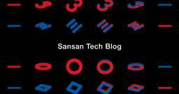
Sansan Tech Blog https://buildersbox.corp-sansan.com/
Sansanのものづくりを支えるメンバーの技術やデザイン、プロダクトマネジメントの情報を発信
1日前
hacomono TECH BLOG https://techblog.hacomono.jp/
フィットネスクラブやスクールなどの顧客管理・予約・決済を行う、業界特化型SaaS「hacomono」を提供する会社のテックブログです！
1日前
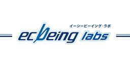
ecbeing labs（イーシービーイング・ラボ） https://blog.ecbeing.tech/
株式会社ecbeing プロダクト開発チームの開発者ブログです。 導入実績 No.1 ECサイト構築パッケージ「ecbeing」、低価格・高機能のクラウドECプラットフォーム「メルカート」、ビジュアルマーケティングツール「visumo」などを開発しています。
1日前

Google DeepMind News https://deepmind.google/blog/
Discover our latest AI breakthroughs, projects, and updates.
2日前
Yappli Tech Blog
https://tech.yappli.io/
株式会社ヤプリの開発メンバーによるブログです。最新の技術情報からチーム・働き方に関するテーマまで、日々の熱い想いを持って発信していきます。
2日前
OpenAI News https://openai.com/news
Stay up to speed on the rapid advancement of AI technology and the benefits it offers to humanity.
2日前
Wantedly Engineer Blog https://www.wantedly.com/stories/s/wantedly_engineers
Wantedlyのエンジニアによる、テックブログです。開発者向け技術情報を中心に発信しています。「シゴトでココロオドル人をふやす」というミッションを掲げ、ビジネスSNS Wantedly （ウォンテッドリー）を展開しています。
2日前
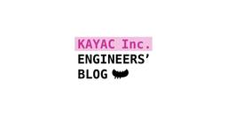
KAYAC Engineers' Blog https://techblog.kayac.com/
カヤックのエンジニアがサービスの開発や運用などで培ってきた技術などの情報をまとめたブログです。WebやiOS、Androidの技術情報だけではなく、最新のデバイス、VR、Unity、インフラストラクチャなどのさまざまな最新技術についても毎週紹介していきます！
2日前
GO Tech Blog https://techblog.goinc.jp/
GO Tech Blogは、タクシーアプリ『GO』を始めとして様々なサービスを展開しているGO株式会社が技術情報などを紹介するテックブログです。
2日前
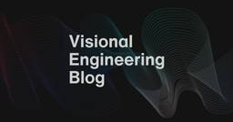
Visional Engineering Blog https://engineering.visional.inc/blog/
Visional のエンジニアが執筆する公式技術ブログです。ビズリーチ、HRMOS、ビズリーチ・キャンパス など、様々な事業における Engineering への取組みを発信していきます。
2日前
PR TIMES 開発者ブログ https://developers.prtimes.com
こんにちは。普段フロントエンドを中心に開発している古園（@miyabin4113）です。 2026年6月6日（土）に開催された「フロントエンド・PHPカンファレンス北海道2026」にて、PR TIMESはプラチナスポンサーとして協賛しました。
2日前
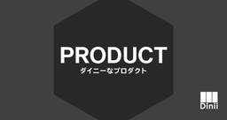
ダイニーなプロダクト https://note.com/dinii/m/mf6424286cfa2
ダイニーのプロダクトの発信をまとめています。 Zenn に ダイニー Tech Blog ( https://zenn.dev/p/dinii ) をオープンしました 。 ダイニーのプロダクト開発や開発組織、どんなプロダクトなのか、どのように開発しているのかについて書いているブログです。
2日前
Cybozu Inside Out | サイボウズエンジニアのブログ https://blog.cybozu.io/
サイボウズ株式会社、サイボウズ・ラボ株式会社のエンジニアが提供する技術ブログです。製品やサービスの開発、運用で得た技術情報やエンジニアの活動、採用情報などをお届けします。
2日前

CyberAgent Developers Blog | サイバーエージェント デベロッパーズブログ https://developers.cyberagent.co.jp/blog
サイバーエージェントのエンジニア・クリエイター・テクニカルクリエイターが執筆する公式ブログです。サイバーエージェントの技術情報を日々発信していきます。
2日前
ラック・セキュリティごった煮ブログ https://devblog.lac.co.jp/
セキュリティエンジニアがエンジニアの方に向けて、 セキュリティやIT技術に関する情報を発信していくアカウントです。
2日前

Anthropic News https://www.anthropic.com/news
Anthropic is an AI safety and research company that's working to build reliable, interpretable, and steerable AI systems.
3日前
Blog on DeNA Engineering https://engineering.dena.com/blog/
DeNAのエンジニアが考えていることや、担当しているサービスについて情報発信しています
3日前
Leverages Tech Blog https://tech.leverages.jp/
Levergaesのエンジニアブログです。私たちの会社・サービス・メンバーにまつわる情報を日々発信していきます。
3日前

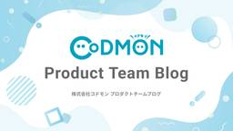
コドモン Product Team Blog https://tech.codmon.com/
株式会社コドモンの開発チームで運営しているブログです。エンジニアやPdMメンバーが、プロダクトや技術やチームについて発信します！
3日前
弁護士ドットコム株式会社 Creators’ blog https://creators.bengo4.com/
弁護士ドットコムがエンジニア・デザイナーのサービス開発事例やデザイン活動を発信する公式ブログです。
3日前
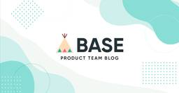
BASEプロダクトチームブログ https://devblog.thebase.in/
ネットショップ作成サービス「BASE ( https://thebase.in )」、ショッピングアプリ「BASE ( https://thebase.in/sp )」のプロダクトチームによるブログです。
3日前
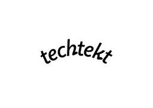
techtekt（テックテクト） | パーソルキャリアのエンジニアブログ https://techtekt.persol-career.co.jp/
未来の「はたらく」をテクノロジーで創造するパーソルキャリアの「エンジニアリング組織」に所属する社員のリアルな「はたらく」にフォーカスし、組織、そして文化醸成の過程を発信するコンテンツプラットフォーム
3日前
IIJ Engineers Blog https://eng-blog.iij.ad.jp
IIJ Engineers Blogは、開発・運用の現場から、IIJのエンジニアが技術的な情報や取り組みについて 執筆する公式ブログです。
5日前
メドピア開発者ブログ https://tech.medpeer.co.jp/
集合知により医療を再発明しようと邁進しているヘルステックカンパニーのエンジニアブログです。読者に有用な情報発信ができるよう心がけたいので応援のほどよろしくお願いします。
6日前
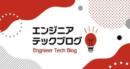
ENGINEER TECH BLOG https://note.wingarc.com/m/m1d39b8a5d9be
ウイングアーク１ｓｔのエンジニアによるテックブログです。 アーキテクトを担うITエンジニアメンバー（社員）が、かわるがわる「ものづくり」のナレッジやそのソース、TechのHowToを発信します。
6日前
freee Developers Hub https://developers.freee.co.jp/
フリー株式会社の開発者（エンジニア, デザイナー,プロダクトマネージャー, etc...）によるブログです
6日前
Uzabase for Engineers https://tech.uzabase.com/
スピーダ, NewsPicksなどを開発するユーザベースのTech Blog & エンジニア採用サイト
6日前
【PRONI】テックブログ https://note.proni.co.jp/m/mc84cf9468445
PRONI株式会社のエンジニアが、当社が提供するBtoB受発注プラットフォーム「PRONIアイミツ」他サービスに関連する技術情報、開発現場の裏側、働き方やカルチャーについて発信しています。
8日前
Google Developers Japan https://developers-jp.googleblog.com/
Google から開発者のみなさま向けの情報をいち早くお届けするブログです。
8日前

Platinum Data Blog by BrainPad ブレインパッド https://blog.brainpad.co.jp/
株式会社ブレインパッドの社風、働き方、当社の多彩なプロフェッショナルを紹介するオウンドメディアです。
9日前
Oisix Creator's Blog（オイシックスクリエイターズブログ） https://creators.oisix.co.jp/
オイシックス株式会社のエンジニア・デザイナーが執筆している公式ブログです。
10日前
IEEE Spectrum Video Friday https://spectrum.ieee.org/tag/video-friday
Video Friday is your weekly selection of awesome robotics videos, featuring humanoid robots, drones, and more, collected by your friends at IEEE Spectrum robotics.
13日前
金沢工業大学 http://www.kanazawa-it.ac.jp/
KIT 金沢工業大学のオフィシャルサイトです。入学案内、学部・大学院、教育、課外活動、研究、学生生活、各キャンパス等の各種情報がご覧いただけます。
13日前

LegalOn Technologies Engineering Blog https://tech.legalforce.co.jp/
LegalOn Technologies 開発チームによるブログです。
14日前
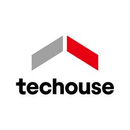
Techouse Developers Blog https://developers.techouse.com/
テックハウス開発者ブログ｜マルチプロダクト型スタートアップ｜エンジニアによる技術情報を発信｜SaaS、求人プラットフォーム、DX推進
14日前
noteエンジニアチーム 公式マガジン https://engineerteam.note.jp/m/m70da42dac8cf
noteエンジニアの技術記事をまとめたマガジン。さらに技術記事を読みたい方はこちら→ https://engineerteam.note.jp/
15日前
OPTiM TECH BLOG https://tech-blog.optim.co.jp/
オプティムの企業テックブログ。OPTiMのエンジニアが技術情報を発信。AIの最新動向からクラウドのアーキテクチャ、Web開発、モバイルアプリ開発まで多様な技術を紹介。AI・IoTプラットフォームや、農業、医療、建設向けサービスを実現しています。
16日前
朝日新聞社 メディア研究開発センター https://note.com/asahi_ictrad
朝日新聞社の研究開発チーム（通称「M研」）です。このブログでは、社内の技術者たちが、日々のお仕事や研究開発しているテーマ、実験的な「やってみた」記録などを、時に真面目に、時にゆるっと発信していきます。
16日前

バイセル Tech Blog https://tech.buysell-technologies.com/
バイセル Tech Blogは株式会社BuySell Technologiesのエンジニア達が知見・発見を共有する技術ブログです。
22日前
ニフティライフスタイル Tech Blog https://tech.niftylifestyle.co.jp
ニフティライフスタイルを支えるエンジニア達が、日々の業務や自己研鑽から得られたノウハウや技術的な知見などについてお伝えしていきます。…
23日前
ぐるなびをちょっと良くするエンジニアブログ https://developers.gnavi.co.jp/
ぐるなびエンジニアブログは、ぐるなびのサービス開発を支える技術やデザイン、文化を紹介するオウンドメディアです。
24日前
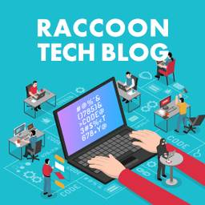
Raccoon Tech Blog [株式会社ラクーンホールディングス 技術戦略部ブログ] https://techblog.raccoon.ne.jp
株式会社ラクーンホールディングスのエンジニア/デザイナーから技術情報をはじめ、世の中のためになることや社内のことなどを発信してます。
24日前
Stanby Tech Blog
https://techblog.stanby.co.jp/
求人検索エンジン「スタンバイ」を運営するスタンバイの開発組織やエンジニアリングについて発信するブログです。
24日前
Mirrativ Tech Blog https://tech.mirrativ.stream/
株式会社ミラティブの開発者(バックエンド,iOS,Android,Unity,機械学習,インフラ, etc.)によるブログです
1ヶ月前
ONE CAREER Tech Blog https://note.com/dev_onecareer
ワンキャリアのエンジニアによる技術者向けのブログです。普段の開発内容や、組織づくりなどを発信していきます。 一緒に働ける方を絶賛募集しています。 https://recruit.onecareer.co.jp/
1ヶ月前

MONEX ENGINEER BLOG │マネックス エンジニアブログ https://blog.tech-monex.com/
マネックス証券のシステム開発部のエンジニア達がどのような業務をしているのか紹介するブログです。
1ヶ月前
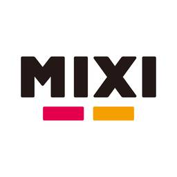
MIXI DEVELOPERS - Medium https://mixi-developers.mixi.co.jp?source=rss----bc6b0ae5a97c---4
株式会社MIXIに所属の開発者による技術知見や開発ノウハウ、カンファレンスレポートなど、開発に関する情報を共有するエンジニア・ブログです。
1ヶ月前
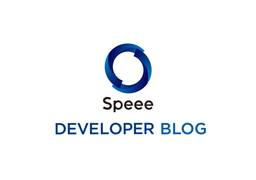
Speee DEVELOPER BLOG https://tech.speee.jp/
Speee開発陣による技術情報発信ブログです。 メディア開発・運用、スマートフォンアプリ開発、Webマーケティング、アドテクなどで培った技術ノウハウを発信していきます！
1ヶ月前
SHOWROOM Blog https://note.com/showroom_blog
ライブ配信プラットフォーム「SHOWROOM」やバーティカルシアターアプリ「smash.」を運営しているSHOWROOM株式会社の社員ブログです。|採用:https://tinyurl.com/ycxpe7z2 |旧ブログ:https://tinyurl.com/mudu3kzv
1ヶ月前
inSmartBank https://blog.smartbank.co.jp/
AI家計簿アプリ「ワンバンク」を開発・運営する株式会社スマートバンクの Tech Blog です。より幅広いテーマはnoteで発信中です https://note.com/smartbankinc
1ヶ月前
Mobile Factory Tech Blog https://tech.mobilefactory.jp/
技術好きな方へ！モバイルファクトリーのエンジニアたちが楽しい技術話をお届けします！
2ヶ月前
トレタ開発者ブログ https://tech.toreta.in/
飲食店向け予約／顧客台帳サービス「トレタ」、モバイルオーダー「トレタO/X」などを運営するトレタの開発メンバーによるブログです。
2ヶ月前
ラクス フロントエンドチーム https://note.com/rakus_fe/m/m653605948abe
ラクス フロントエンドチームによるマガジンです 🧭「ラクスについてもっと知りたい！」と思っていただけましたら、こちらもどうぞ！ ▼キャリア採用サイト …https://career-recruit.rakus.co.jp/ エンジニア採用サイト…https://career-recruit.rakus.co.jp/career_engineer/
2ヶ月前
asken テックブログ https://tech.asken.inc/
askenエンジニアが日々どんなことに取り組み、どんな「学び」を得ているか、よもやま話も織り交ぜつつ綴っていきます。 皆さまにも一緒に学びを楽しんでいただけたら幸いです！ <br> 食事管理アプリ『あすけん』 について <br> https://www.asken.jp/ <br>
2ヶ月前
bitbank techblog https://tech.bitbank.cc/
ビットバンクの技術を皆さんに知ってもらうために、この度bitbank tech blogを開設しました。このブログではビットバンクのエンジニアやデザイナーが関心のある技術やTips、職場、イベント等について自由に書いていきます。
3ヶ月前
Kurashicom Tech Blog https://note.com/kurashicom_tech
「北欧、暮らしの道具店」を運営しているクラシコムのエンジニア（ときどきデザイナー）による、技術者向けのブログです。普段の開発内容や、開発するなかでの気づきなどを発信しています。
3ヶ月前

Knowledge Work Developers Blog https://note.com/knowledgework
株式会社ナレッジワークは「LIFE WITH ENABLEMENT できる喜びが巡る日々を届ける」をミッションに、セールスイネーブルメントAI「ナレッジワーク」を開発・提供しています。
3ヶ月前

WonderPlanet Developers’ Blog https://developers.wonderpla.net
ワンダープラネットの技術や組織、カルチャーなどを日々発信していきます。
3ヶ月前
Retty Tech Blog https://engineer.retty.me/
実名口コミグルメサービスRettyのエンジニアによるTech Blogです。プロダクト開発にまつわるナレッジをアウトプットして、世の中がHappyになっていくようなコンテンツを発信します。
5ヶ月前
Money Forward Kessai TECH BLOG https://tech.mfkessai.co.jp/
企業間後払い決済サービス「マネーフォワード 掛け払い」を運営するマネーフォワードケッサイ株式会社の技術ブログです。
5ヶ月前
CAMPFIRE 開発チーム https://note.com/campfire_dev
国内最大のクラウドファンディング「CAMPFIRE : https://camp-fire.jp 」開発チーム公式 note 🔥
5ヶ月前
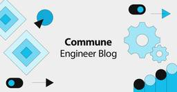
Commune Engineer Blog https://tech.commune.co.jp/
コミューン株式会社のエンジニアブログです。フロントエンド、サーバサイド、SREなどすべてのエンジニアに見て欲しいブログです。
5ヶ月前
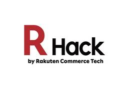
テック - R-Hack（楽天グループ株式会社） https://commerce-engineer.rakuten.careers/archive/category/%E3%83%86%E3%83%83%E3%82%AF
楽天コマース＆マーケティングカンパニーの開発部門がお届けするR-Hack。楽天市場、楽天トラベルなど70以上のサービスを支えるエンジニアたちの声を通して、開発部門の雰囲気や「はたらくリアル」、そして数多くの学習の機会と気になる福利厚生などについてご紹介しています。
5ヶ月前
TechBlog - BIGLOBE Style ｜ BIGLOBEの「はたらく人」と「トガッた技術」 https://style.biglobe.co.jp/archive/category/TechBlog
BIGLOBEではたらく人の想いから、インターネットを支える技術まで、 社内の雰囲気を多面的に紹介するメディアです。
6ヶ月前
スタディスト Tech Blog - Medium https://studist.tech?source=rss----1b85cc1f989a---4
最新記事はnoteマガジン「Studist Tech」をチェックしてください！ https://note.com/studist/m/m0a7023a58bfb
6ヶ月前
Tech Inside Drecom https://tech.drecom.co.jp/
Tech Inside Drecomでは株式会社ドリコムの「ものづくり」における技術側面の情報を掲載しています。
6ヶ月前
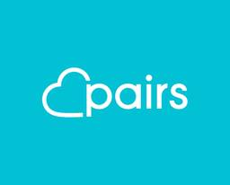
Pairs Engineering - Medium https://medium.com/eureka-engineering?source=rss----5c512e0ddc60---4
Learn about Pairs’ engineering efforts, product developments and more.
6ヶ月前
Makuake Tech note https://note.com/dev_makuake
株式会社マクアケのエンジニアが運営するMakuake Tech noteです！ マクアケのエンジニアカルチャー、技術に関するトピックを定期的に発信していきます。 「マクアケで働くワクワク」を届けられるように頑張りますので、ぜひフォローをよろしくお願いします！
1年前
プラチナゲームズ公式ブログ https://www.platinumgames.co.jp/official-blog/
ゲーム開発会社プラチナゲームズの公式ブログ。開発中のゲームのニュースやイベントレポート、採用情報など、プラチナゲームズに関する様々なことを発信しています。
1年前
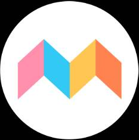
mitene / FamilyAlbum Team - Medium https://team-blog.mitene.us?source=rss----67e8087a527e---4
家族アルバム みてねのエンジニアやデザイナーによるブログです
1年前
ランサーズ（Lancers）エンジニアブログ https://engineer.blog.lancers.jp
ランサーズ株式会社が運営する公式エンジニアブログです。ランサーズのエンジニアが感じたことや学んだ体験、イベントなどについて更新していきます。
1年前
SEGA XD ： Tech Blog https://note.com/segaxd/m/m81bdf8ff4be8
セガ エックスディーでは AR 、VR をはじめとした XR 領域や、様々なエンタテインメントに関わるテクノロジーを研究開発しています。その中で得られた様々なテクニックやメソッドをテックブログとして公開していきます。
1年前
jig.jp engineers https://note.com/jigjp_engineer
jig.jp のエンジニアたちがアプリ開発などの情報を発信するエンジニアブログです。 採用情報はこちら 👉 https://twitter.com/jigjp_recruit
2年前
SMARTCAMP Engineer Blog https://tech.smartcamp.co.jp/
スマートキャンプ株式会社(SMARTCAMP Co., Ltd.)のエンジニアブログです。業務で取り入れた新しい技術や試行錯誤を知見として共有していきます。
2年前

Tech Blog in TIER IV MEDIA on Medium https://medium.com/tier-iv-tech-blog/tagged/tech-blog?source=rss----a2a173164715--tech_blog
TIER IV is a deep-tech start-up based in Japan, dedicated to providing shared autonomous driving technology to everyone.
2年前
Media × Tech https://www.mediatechnology.jp/
「Media × Tech」ブログはスマートニュースのメディア担当チームが運営するブログです。テクノロジーを活用した次世代のメディアとはどういうものか？ そうしたメディアをどうやって創り出していくのか、を考えていきます。
2年前
Ubiregi Tech Blog https://note.com/ubiregi/m/madc9f4f38ad9
“カンタンがいちばん“がコンセプトのクラウドPOSレジ「ユビレジ」の開発者によるブログです。プロダクトの開発・運用業務全般の専門的な内容はもちろん、開発手法やプロダクトとの向き合い方、データ分析など、どのように開発を進めているのかをお届けします！
3年前
Tech Blog https://techblog.timers-inc.com/
グローバルな家族アプリFammを運営するTimers inc (タイマーズ) の公式Tech Blogです。弊社のエンジニアリングを支える記事を随時公開。エンジニア絶賛採用中！→ https://timers-inc.com/engineering
3年前
stand.fm テックブログ https://note.com/standfm_company
株式会社stand.fmの中のこと、技術のことを発信していきます。がんばっています！https://stand.fm/
4年前
DSAS開発者の部屋
http://dsas.blog.klab.org/
DSASとはKLab(株)が構築し運用しているコンテンツサービス用のプラットフォームです。Linuxベースのクラスタリングシステムで、高い信頼性、可用性、柔軟性を備え低コストで運用できるのが特徴です
4年前
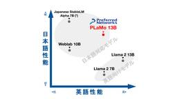
PLaMo-13Bを公開しました へのコメント https://tech.preferred.jp/ja/blog/llm-plamo/
Preferred Networksでは、9月28日にPLaMo-13Bという大規模な言語モデル (LLM)
-